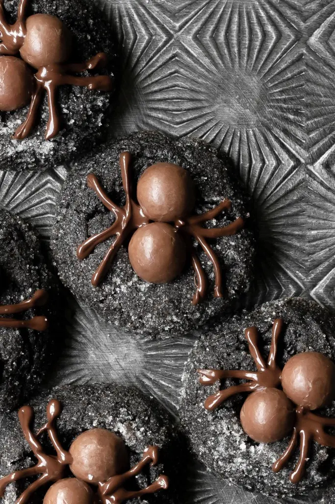

Chocolate Spider Cookies

Description:
This are cute, delicious cookies perfect for halloween. Just like the chocolate
chip cookies, these are also a small batch of cookies. So its perfect for people who live alone,
have no friends, are college students, single, or just want to make a small batch of cookies.
The total number of cookies this makes is 12, but you can always double batch the amount to your liking.
2 things to note about making these cookies: under bake the cookies and work fast after they come out of the oven.
You want to quickly add the 2 Whoppers into the cookies and immediatly store in the freezer to prevent them from melting.
And once the cookies have perfectly cooled down, you can go ahead and add the spider legs. As for the underbaked
cookies, we want them a bit more soft for the Whoppers to squeeze in. Chewy cookies are also better. But anyway,
enjoy making these cookies at 2am the night before halloween!
Ingredients:
- 50 g unsalted butter (3 ½ tbsp.)
- 24 g dark cocoa powder (¼ c.)
- 60 g creamy peanut butter (¼ c.)
- 90 g dark brown sugar (¼ c. + 3 tbsp.)
- 1 egg
- ½ tsp. vanilla
- 90 g all purpose flour (¾ c.)
- ½ tsp. baking soda
- ¼ tsp. salt
- 50 g granulated sugar (¼ c.)
- 24 whoppers
- 55 g semi-sweet chocolate chips (⅓ c.)
- ½ tsp. vegetable oil
Steps:
- Preheat the oven to 350°F / 175°C. Line a baking sheet with parchment paper or a silicone baking mat.
- Melt the butter in a microwave safe bowl. Immediately whisk the cocoa powder, followed by the peanut butter. Whisk until the peanut butter has completely melted and the mixture is smooth.
- Add in the brown sugar, egg, and vanilla. Whisk until well combined.
- Add in the flour, baking soda and salt. Fold the mixture together just until no more flour streaks remain.
- Use a 1.5 tbsp. cookie scoop to dish out the dough, then roll each cookie in the granulated sugar.
- Evenly space out the coated scoops of the cookie dough on the cookie sheet and bake for 8 minutes. Make sure you have the whoppers out and ready for when the cookies are done baking.
- IMMEDIATELY after the cookies come out of the oven, press two whoppers into the center of each one. Once all the cookies have been topped, place them in the fridge to chill for 10-15 minutes or until the cookies and chocolate are no longer warm.
- Melt the chocolate and vegetable oil in the microwave in 30 second intervals, until smooth. Transfer the chocolate to a piping bag fitted with a small round tip.
- Starting from the middle of the two whoppers, pipe four chocolate legs on to each side to create the spider.
- Serve and enjoy!